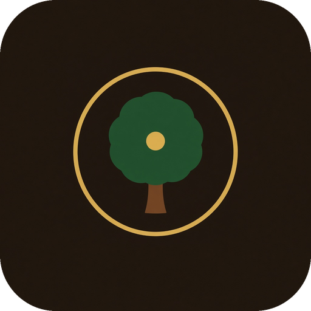

The garden

God Most High
A mythic simulator of the first garden.
Version 1.0.0
A telling, not a scripture. Three gardens are kept on this computer.
Before the first morning, you are.
Not a watcher only. A maker.
The deep is unformed. Speak, and it will answer.
Paused
Settings
Version 1.0.0
The word
Divine address
Voice input uses the Web Speech API when this window has it. In the desktop app it often does not; typing still reaches them, and a missing spoken voice does not discard the reply. Settings can turn voice off.
Codex
Journal
How to shape a world
Speak the great words in order: light, waters, land, grove, luminaries, creatures, then the two people. Smaller acts spend divine breath, which returns on its own.
Descend to walk. Draw near to Adam and Eve and press E, or click them when you are close. In the sky, click them from anywhere.
After they have names for the beasts, inscribe a commandment or keep silent. Then speak with Eve. The garden will keep one of four endings, and it will remain open afterward.
Once Adam is formed, Address opens a free conversation with Adam or Eve. Replies follow the garden and the Unity Thread: age, coherence, seals, and what you just said. Voice types from speech when this window can hear you. If it cannot, type instead. Speak reads the last reply aloud when a voice is available; otherwise the reply stays in the log.
Three gardens are kept on this computer. An empty garden starts a new creation in that slot. Continue resumes the active garden, or the newest one. Settings remembers master volume, fullscreen, text speed, and whether voice is on.
M ascend or descend · 1–8 tools · E speak · Esc pause · H help · F fullscreen · scroll to look closer
Epilogue